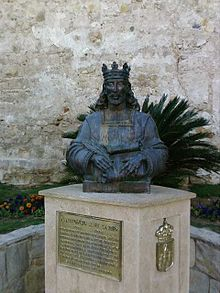
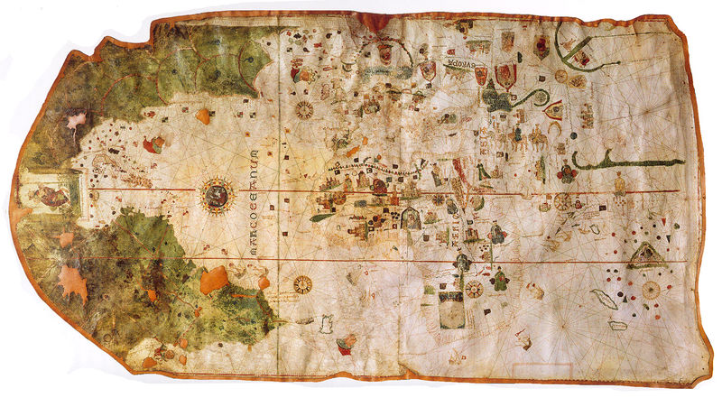
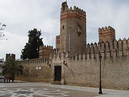
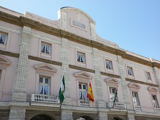

La provincia de Cádiz es muy diversa, con comarcas que merecen ser visitadas, desde la campiña de Jerez de la Frontera a sus pueblos del Campo de Gibraltar o un recorrido por los pueblos blancos y descansar en algún lugar de la costa entre Tarifa hasta Sanlúcar de Barrameda. Todo ello sin olvidar su capital, que guarda en sus murallas la cultura y tradiciones que la hacen distinta, como a sus gentes
| CIUDAD | TIPO | IMAGEN | INFORMACIÓN | HORARIO |
|---|---|---|---|---|
| EL PUERTO DE SANTA MARÍA | ESTATUA |  |
|
CUALQUIER HORA |
| MAPA |  |
|
En el museo Municipal
|
|
| EDIFICIO |  |
Castillo de S.Marcos
|
Mediante Cita previa al 956-99-88-77
|
|
| CÁDIZ | EDIFICIO |  |
Sede de la Diputación Provincial de Cádiz
|
HORARIO DE OFICINAS |